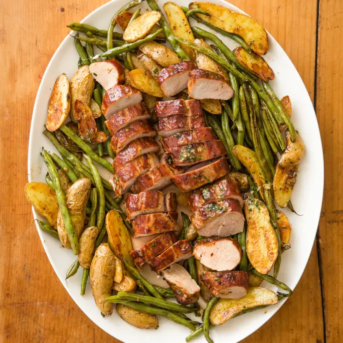

One-Pan Pork Tenderloin with Green Beans and Potatoes

Description
This recipe requires relatively few ingredients and can be fully prepared in an hour and fifteen minutes. Make sure to use an instant read
thermometer and to cook to temperature and not to time!
Ingredients
- 4 tablespoons unsalted butter, softened
- 2 tablespoons minced fresh chives
- 1 garlic clove, minced to paste
- 3/4 teaspoon table salt, divided
- 3/4 teaspoon black pepper, divided
- 2 pounds pork tenderloins (2 loins), trimmed
- 1/4 cup hoisin sauce
- 1 pound green beans, trimmed
- 3 tablespoons extra-virgin olive oil
- 1.5 pounds fingerling potatoes, unpeeled, halved lengthwise
Steps
- Adjust oven rack to lower-middle position and heat oven to 450 degrees. Combine butter, chives, garlic, 1/4 teaspoon salt,
and 1/4 teaspoon pepper in bowl; set aside. Pat pork dry with paper towels and season with pepper. Brush tenderloins all
over with hoisin sauce.
- Toss green beans, 1 tablespoon oil, 1/4 teaspoon salt, and 1/4 teaspoon pepper together in large bowl. Arrange green bean
mixture crosswise down center of rimmed baking sheet, leaving room on both sides for potatoes. Toss potatoes, remaining
2 tablespoons oil, 1/4 teaspoon salt, and 1/4 teaspoon pepper together in now-empty bowl. Arrange potatoes, cut side down,
on both sides of green beans.
- Lay tenderloins, side by side without touching, lengthwise on top of green beans. Roast until pork registers 140 degrees,
20 to 25 minutes. Transfer tenderloins to carving board and dot each with 1 tablespoon reserved herb butter. Tent with
aluminum foil and let rest while vegetables finish cooking.
- Gently stir vegetables on sheet to combine. Return sheet to oven and roast until vegetables are tender and golden brown,
5 to 10 minutes longer. Remove from oven, add remaining 2 tablespoons herb butter to sheet, and toss vegetables to coat.
Transfer vegetables to platter. Cut pork into 1/2-inch-thick slices and place over vegetables, pouring any accumulated
juices over top. Serve.